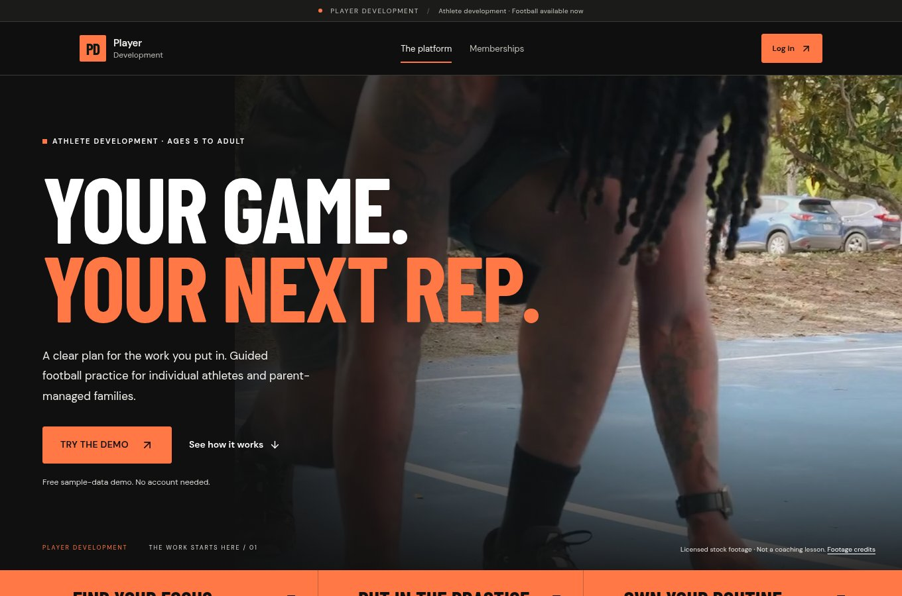
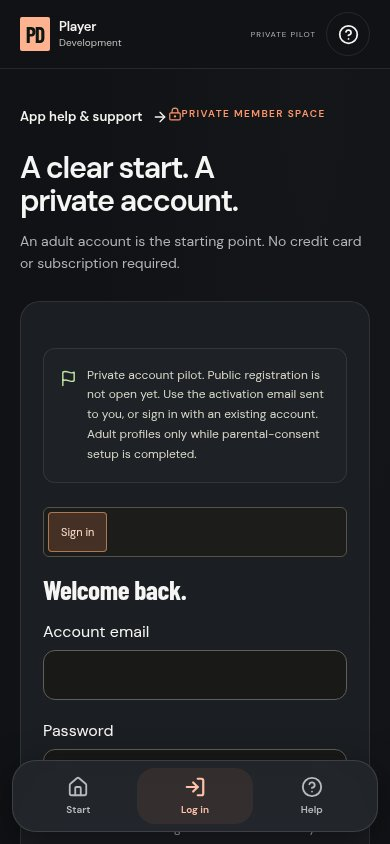
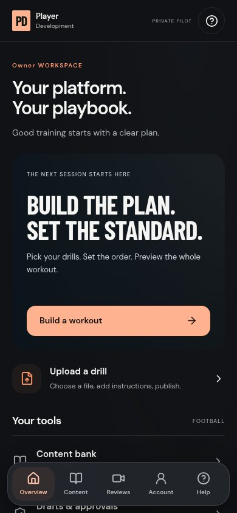
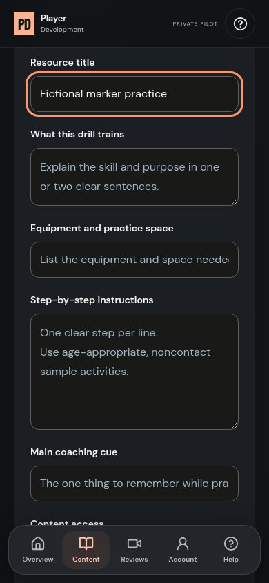
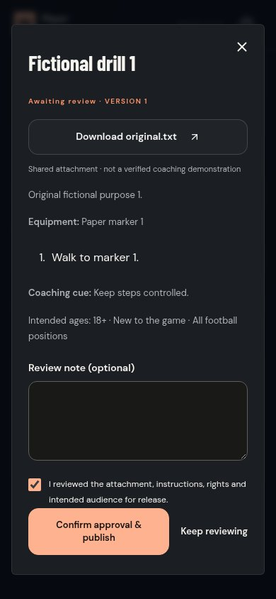
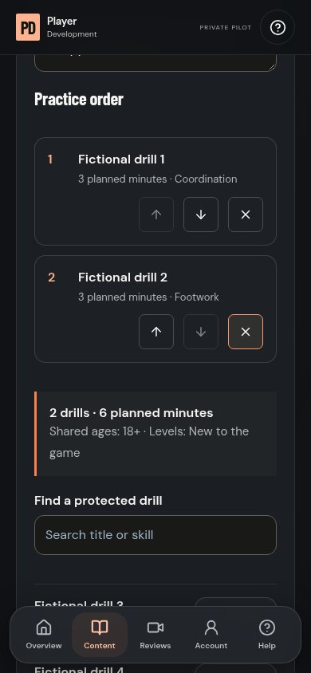
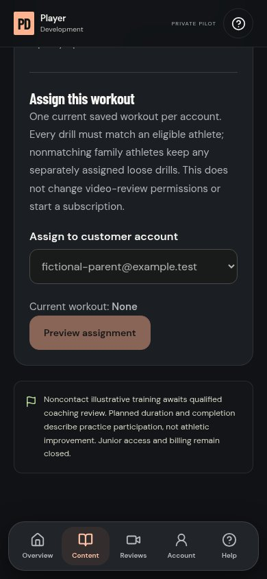
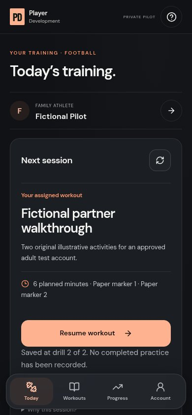
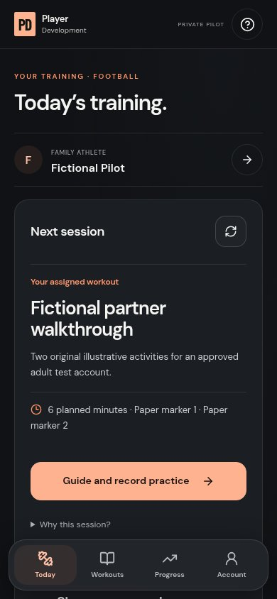

WEBSITE + iPHONE APP / 8–10 MINUTE READ
Your first session, from upload to finish.
A practical walkthrough of the Player Development website and iPhone app, made for you and your partner.
Private pilot · iPhone build 10 · October 2026
Screenshots show the actual website and shared app workspace in a browser, using fictional accounts and sample text attachments. They are not photographs of native Photos/camera screens or coaching demonstrations. No real player information appears here. Native iPhone-only steps are called out in the instructions.
01 / Start here · anyone
The website is your front door.
Use the public website to explain the platform. Use the private workspace to manage or complete training. Football is the current program; future sports are not yet announced.
- Open the website link at the top of this guide. Explore the homepage and program information.
- Choose Try the demo on the homepage to explore the one fictional customer demo. Choose Parent & family or Solo athlete there. It is separate from your real account.
- Choose Log in to open your approved private account. A public visitor does not get access to protected drills just by browsing.
- Show your partner the public demo first, then return to this guide for the real staff workflow.


02 / Website + iPhone
Open the app and sign in.
Your Apple Account installs the app. Your separate Player Development account opens its private training workspace.
- On an iPhone with approved testing access, open TestFlight → Player Development Test → Install or Update. This guide follows build 10; use a newer approved build if one is available.
- Open Player Development and select Log in to your account. Enter your Player Development email and password, then select Sign in securely.
- An Owner, Manager or Coach goes to the staff workspace. Staff do not choose Parent or Athlete to use management tools.
- For a forgotten password, open the website account page in Safari and use password recovery. Complete the email steps, then return to the app.
- Your partner needs their own approved account. If their TestFlight invitation or Player Development access is missing, request it through the established setup process; a link to this guide does not grant either kind of access.


03 / Know your workspace
Each account sees its own tools.
The website and app share the same private account permissions. Account level decides which tools appear; it does not create a subscription.
- As staff, begin on Overview. Build a workout and Upload a drill are the main actions. Content holds your bank, builder and approval tools.
- Reviews holds authorized video-review work. Account holds account settings; Owners also have Accounts & training access.
- Customers use Today, Workouts, Progress and Account. A parent can switch the selected family athlete; a solo athlete has one individual profile.
- Check your account level before troubleshooting a missing button. Staff status alone does not open private family profiles or every video submission.


Five account levels
| Level | Main tools |
|---|---|
| Owner | Manage account levels and assignments; manage content and approve publication. |
| Manager | Manage and approve shared content across coaches; no Owner account-directory or assignment controls. |
| Coach | Manage and submit own content; review only clips specifically assigned to that coach. |
| Parent | Manage their family athletes, recording permissions and practice reviews within enabled account access. |
| Athlete | Use one individual athlete profile, independently or connected to a family, within granted permissions. |
04 / Owner · Manager · Coach
Turn one recording into a drill.
Start with an original or licensed video and clear instructions. The guide's sample text attachment only illustrates the upload form; supply your own qualified-reviewed training media.
- Open Upload a drill or Content. Keep the destination on Shared website and choose Protected training for paid/private training content.
- In the native iPhone app, choose Choose & prepare iPhone video. Select a Photos recording, choose its start/end range and select Prepare this clip. Preview the prepared MP4. Your original stays in Photos. On the website, use Choose a video or file instead.
- Fill Resource title, What this drill trains, Equipment and practice space, Step-by-step instructions and Main coaching cue. Enter one practice step per line and the planned minutes.
- Select intended ages, positions, experience and skill/goal. Confirm media rights, choose Preview matches, then inspect the attachment, instructions and fictional matching players.
- Choose Save shared draft and wait for transfer and save confirmation. Save draft on this device is an optional way to finish later on the same device; it does not upload or sync the draft.


05 / Submit first · release deliberately
Review before anyone trains.
Saving a shared draft does not publish it. Owner or Manager approval is a separate release decision.
- Open Content → Drafts & approvals. Find the saved drill and choose Preview & review.
- Choose Send for review and confirm. Its stage becomes Awaiting review. Coaches can submit their own drafts but cannot approve publication.
- As Owner or Manager, preview the actual attachment, instructions, rights and intended audience. Choose Approve & publish, acknowledge the release checks, then Confirm approval & publish.
- If changes are needed, choose Request changes and leave a clear note. Edit, save and resubmit the draft before reviewing it again.


06 / Owner · Manager · Coach
Build the complete workout.
A drill is one activity. A workout is a named session with those activities in a specific order.
- On an approved protected drill, choose Build a workout with this drill. Or open Overview → Build a workout to start from the bank.
- Enter a Workout name and optional Workout introduction. Search approved protected drills and choose Add for each activity.
- Use the up/down controls to set the order. Remove an activity from this workout if needed; that does not delete the drill from the bank.
- Check the common age, position and experience audience and planned duration. Choose Preview workout, inspect the whole session, then Save workout.


07 / Owner only
Assign it to the right account.
Saving a workout puts it in the staff bank. An Owner's explicit assignment makes the saved session available to an eligible customer.
- Open the saved workout. Save or discard any unsaved changes before assigning it.
- Under Assign this workout, choose the verified approved adult customer account. Select Preview assignment to check eligibility.
- Read the account email, workout name/version and drill count. Choose Confirm workout assignment. Keep current assignment cancels the change.
- On the customer phone, refresh Today or Workouts. A matching athlete receives every drill in the saved order. If nothing appears, check the athlete's audience, approval status and assignment.


08 / Parent · Athlete
Practice, pause and return.
Today shows the next assigned session. Parents first select the correct family athlete; a solo athlete uses their own profile.
- Open Today. Check the session, equipment and planned time. Select the practice/start button; for a parent it can read Guide and record practice.
- Review the practice acknowledgement and select Begin workout. Each drill shows its attached media, instructions, equipment and coaching cue.
- After practicing a drill, choose Complete drill · Next. Previous drill lets you revisit instructions. Watching a video alone does not record completion.
- To stop for now, choose Save & leave workout. Reopen or refresh, select the same athlete and choose Resume workout, then Resume practice after the acknowledgement.
- After completing the session, choose Finish workout. Open Progress to see the participation record and any applicable parent review.


09 / Optional adult pilot feature
Send a private practice clip.
Video review is separate from workout access. An Owner must enable it for the approved adult pilot account and select its assigned review coach.
- Owner setup: open Accounts & training access → Workouts & video review access. Choose the account, enable the optional video review feature, select the coach, then review and save the access change.
- Customer: open Send a drill video, choose the assigned drill, then Record video or Choose video. The native app also offers Choose & prepare iPhone video. Preview before sending.
- Choose Send for coach review and keep the app open until confirmed. Merely selecting or previewing the clip does not send it.
- Assigned coach: open Reviews / Video reviews, open the authorized submission, enter Coaching feedback and choose Send coaching feedback. The customer can then read the saved feedback.
- To remove a clip, choose Delete video and confirm Delete video permanently. Canceling deletion keeps it. Remove clips before deleting their profile data.


YOUR FIRST RUN / 15–20 MINUTES
Try one session together.
Use one Owner phone, one separate approved adult customer account and one original adult noncontact recording. Your partner needs their own approved TestFlight access to install the native app.
- Owner: upload one drill, send it for review and approve its release after the required checks.
- Owner: build and save a compatible workout, then preview and confirm its assignment.
- Customer: refresh Today, begin practice, save and leave, then reopen and resume.
- Customer: finish and check Progress. If video review is enabled, try a private clip and assigned-coach feedback.
WHEN SOMETHING DOES NOT LOOK RIGHT
A few quick answers.
Why is a real account empty?
Real accounts start without demo drills. Staff must upload and approve appropriate training, an Owner must assign it, and the athlete must match its audience.
Why can I not find a staff button?
Check your account level. Owners/Managers approve; only Owners assign saved workouts. An Owner should correct an approved account's role through account access rather than creating a Parent/Athlete profile for staff.
Why does my partner not see my draft?
Save draft on this device is local and disappears on sign-out/account switching. Save shared draft uploads it to the private backend for authorized staff access. Publication still needs approval.
What if a video or upload fails?
Keep the original, shorten and prepare the clip, preview playback and keep the app open. Check the error before retrying. For an uncertain shared save, refresh Drafts & approvals before creating another resource. Background upload is not guaranteed.
Can we start charging or enroll children now?
Public signup, subscriptions and real junior access remain closed. Pricing/packages, billing, privacy/retention and guardian-consent work, reviewed training content and release checks are separate launch requirements.
What should we send when something looks wrong?
Note phone/iOS/build, screen, what you tapped, expected result and actual result. Include a screenshot with private details hidden. Use fictional information or approved adults; never include passwords or children's media.